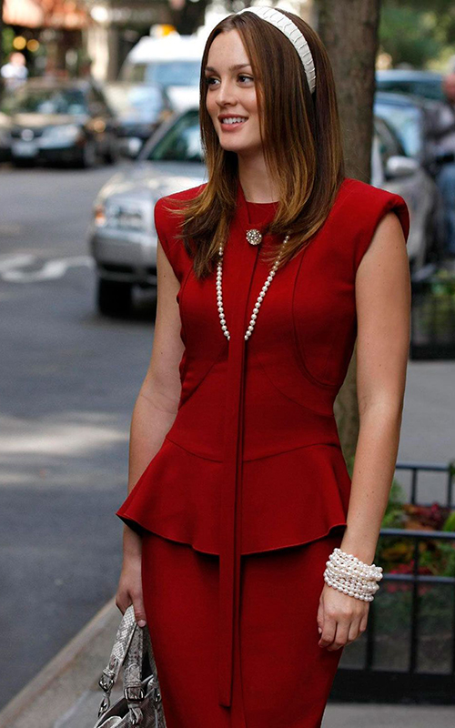
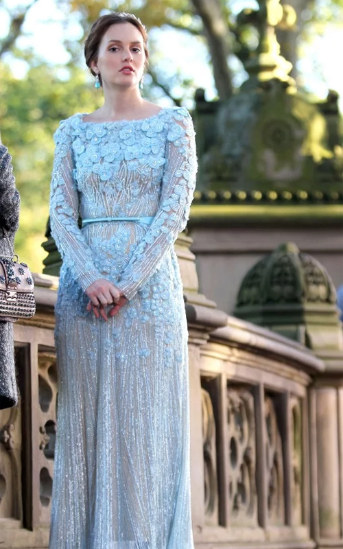
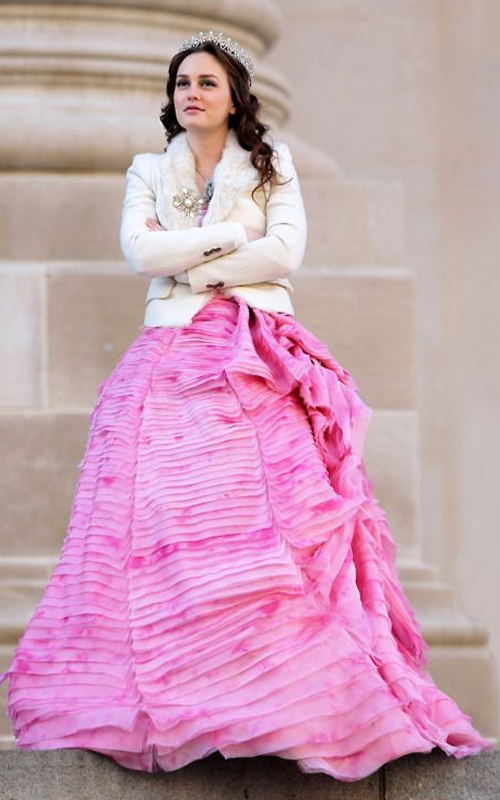

Los Looks de Gossip Girl
La serie se convirtió en el referente de moda del momento y nosotros repasamos los estilismos que valdrían hoy en nuestro armario.
Blair Waldorf

- 
- 
- 
El estilo lady like de Blair Waldorf, junto a esas diademas tan llamativas dieron mucho de qué hablar en los 2000. Tan adorable como odiosa, ella era la princesa de Manhattan y sus outfits pasarán a la historia de la moda seriéfila. Las prendas que más la identificaban eran las medias tupidas de colores, los vestidos preppy y, en general, cualquier look recargado con detalles románticos como lazos o volantes.
Serena Van der Woodsen
Los looks de la chica de oro, Serena Van der Woodsen, se convertían en el centro de todas las miradas allá a donde iba. Su estilo se basaba en una combinación de sexy y explosivo, pero al mismo tiempo, no perdía la elegancia. Por lo que, recopilando sus outfits, hemos podido ver que su identidad fashion se marcaba con los vestidos ajustados, las minifaldas, las blazers y los maxi accesorios.